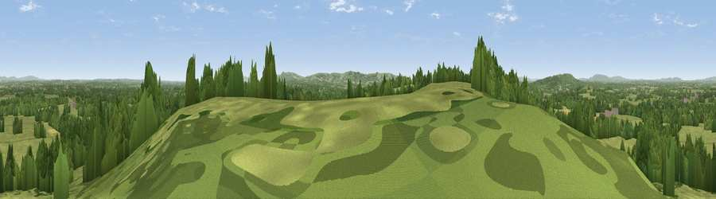

Viewpoint near Nutbourne
#17878 in England · top 33% of its area beats it · near NutbourneThe view, rendered

A 360° render of this exact spot computed from the terrain model, tree cover and land cover — summer colours, afternoon light, calibrated against photographs of famous viewpoints. Real trees, hedges and buildings will differ in detail.
The panorama
Grey silhouette: terrain skyline in each direction (720 bearings, Earth curvature and refraction included). Dashed green: skyline with trees (+15 m) and buildings (+8 m) as obstacles. Blue strip: how far the ground is visible on each bearing.
Where the view opens
Wedge length = distance to the farthest visible ground on that bearing (vegetation-aware). Rings at 10, 25 and 50 km.
What fills the view
64% grassland · 32% woodland · 4% cropland ·
Angular shares of the visible panorama (visual magnitude), not map area. Landscape diversity 0.36 (0–1 Shannon).
Key numbers
More beautiful places nearby
The staircase of upgrades: each row has a higher view potential than everything closer. Driving times are estimates from straight-line distance, calibrated against real road routing — check an actual route before setting out.
| Place | Direction | Drive | Score |
|---|---|---|---|
| Viewpoint near Stopham | WNW · 6 km | ~12 min | 65.4 |
| Viewpoint near Storrington | S · 8 km | ~16 min | 83.9 |
| Viewpoint near Washington | SSE · 10 km | ~20 min | 85.0 |
| Chanctonbury Ring | SE · 10 km | ~20 min | 87.0 |
| Firle Beacon | ESE · 43 km | ~63 min | 88.9 |
| Viewpoint near Niton | SW · 73 km | ~96 min | 89.2 |
| Viewpoint near West Bexington | WSW · 156 km | ~178 min | 89.5 |
| The Knoll | WSW · 157 km | ~179 min | 91.0 |
50.97276, -0.46992 · source: screening · position refined by local search. Computed location — check access rights before visiting.